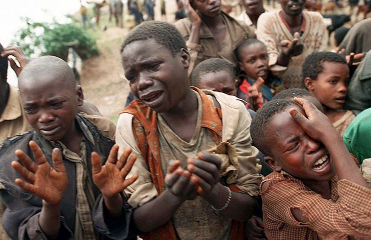

现今这个年代，一个宝宝呱呱坠地总会得到家人的万种关怀、百般呵护，那种程度简直达到含在嘴里怕化了、捧在手心怕掉了。甚至还有一些地方，家里孩子过生日的时候，家长要专门租一个场地请全班同学来参加party。如果不这么做，孩子就会在班里被排挤、没面子。对此我只能说，这么壕的家长，给我来一打！
人们常常说越是贫穷的地方生育能力越强，或许这话在非洲得到了最恰当的证明。在非洲，妇女人均生育8个孩子，但因婴儿营养不良、早折现象很普遍，18岁以下的未成年人占非洲总人口的49%。
据南非当地媒体援引该机构主题为“2025年非洲粮食安全展望”的研究报告预测，20年后将有4190万名非洲儿童每天要过食不果腹的日子，比现在多330万。而这种状况在布基纳法索、尼日尔、索马里、苏丹等撒哈拉以南非洲国家将会更为严重。
报告还指出，根据联合国提出的千年发展目标，非洲在2015年时应把营养不良儿童的数字减少一半。但如果当前状况得不到改善的话，千年发展目标只能成为一纸空文。为此，专家们敦促非洲各国政府和国际社会共同努力，加大人力和物力方面的投入，加快改善该地区在基础设施、水利、贸易以及教育科研和艾滋病防治等与农业生产相关的领域的落后状况。
1976年6月16日，南非约翰内斯堡市郊黑人聚居的索韦托区数千黑人学生上街示威游行，抗议种族主义当局在黑人学校强行推行以白人使用的“阿非利加”语（亦称南非荷兰语）作为教育语言的“班图斯坦”教育制度，遭到南非警察的血腥镇压，当场打死500多名示威学生和儿童，造成震惊世界的惨案。
为了使人们了解生活在非洲大陆51个国家里的3亿儿童正在遭受饥馑、战争、贫穷、疾病等灾难，1991年6月13日，联合国儿童基金会宣布将当年的6月16日定为“国际非洲儿童日”。
1、每年6月16日是国际非洲儿童日，非洲儿童生活艰难；
2、衣食无忧的生活，应当珍惜。